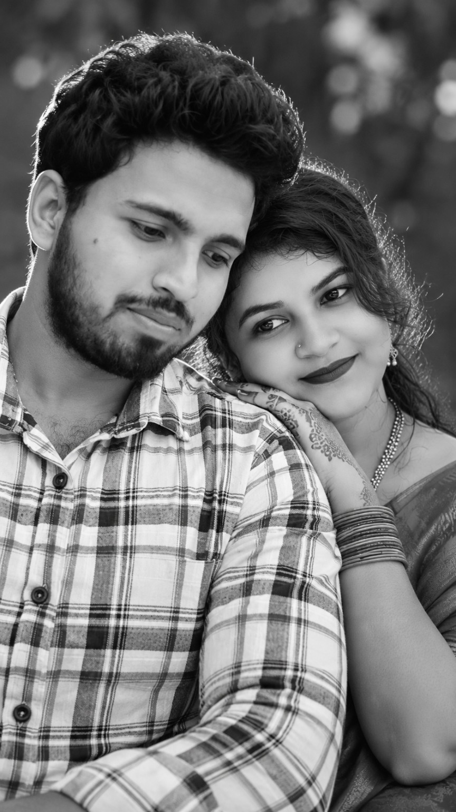

স্বাগতম! এখানে আমার ছবি ও স্মৃতিগুলো অ্যালবাম আকারে সাজানো আছে।
যে ফোল্ডার দেখতে চান, সেটিতে ক্লিক করুন।
💍
বিবাহ
বিয়ের ছবি ও বিশেষ মুহূর্ত
📸
অন্যান্য
পুজো • ঘোরাঘুরি • জন্মদিন • অন্যান্য ছবি

আমার জীবনের বিশেষ মুহূর্তের স্মৃতি
স্বাগতম! এখানে আমার ছবি ও স্মৃতিগুলো অ্যালবাম আকারে সাজানো আছে।
যে ফোল্ডার দেখতে চান, সেটিতে ক্লিক করুন।
বিয়ের ছবি ও বিশেষ মুহূর্ত
পুজো • ঘোরাঘুরি • জন্মদিন • অন্যান্য ছবি